16. RC and L/R Time Constants
Voltage and Current Calculations
There’s a sure way to calculate any of the values in a reactive DC circuit over time.
Calculating Values in a Reactive DC Circuit
The first step is to identify the starting and final values for whatever quantity the capacitor or inductor opposes the change in; that is, whatever quantity the reactive component is trying to hold constant. For capacitors, this quantity is voltage; for inductors, this quantity is current. When the switch in a circuit is closed (or opened), the reactive component will attempt to maintain that quantity at the same level as it was before the switch transition, so that value is to be used for the “starting” value.
The final value for this quantity is whatever that quantity will be after an infinite amount of time. This can be determined by analyzing a capacitive circuit as though the capacitor was an open-circuit, and an inductive circuit as though the inductor was a short-circuit because that is what these components behave as when they’ve reached “full charge,” after an infinite amount of time.
The next step is to calculate the time constant of the circuit: the amount of time it takes for voltage or current values to change approximately 63 percent from their starting values to their final values in a transient situation.
In a series RC circuit, the time constant is equal to the total resistance in ohms multiplied by the total capacitance in farads. For a series L/R circuit, it is the total inductance in henrys divided by the total resistance in ohms. In either case, the time constant is expressed in units of seconds and symbolized by the Greek letter “tau” (τ):
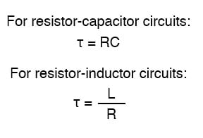
The rise and fall of circuit values such as voltage and current in response to a transient are, as was mentioned before, asymptotic. Being so, the values begin to rapidly change soon after the transient and settle down over time. If plotted on a graph, the approach to the final values of voltage and current form exponential curves.
As was stated before, one time constant is the amount of time it takes for any of these values to change about 63 percent from their starting values to their (ultimate) final values. For every time constant, these values move (approximately) 63 percent closer to their eventual goal. The mathematical formula for determining the precise percentage is quite simple:
The letter e stands for Euler’s constant, which is approximately 2.7182818. It is derived from calculus techniques, after mathematically analyzing the asymptotic approach of the circuit values. After one time constant’s worth of time, the percentage of change from starting value to final value is:
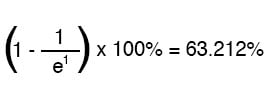
After two time constants’ worth of time, the percentage of change from starting value to final value is:
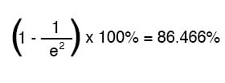
After ten time constant’s worth of time, the percentage is:
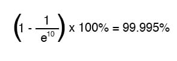
The more time that passes since the transient application of voltage from the battery, the larger the value of the denominator in the fraction, which makes for a smaller value for the whole fraction, which makes for a grand total (1 minus the fraction) approaching 1, or 100 percent.
Universal Time Constant Formula
We can make a more universal formula out of this one for the determination of voltage and current values in transient circuits, by multiplying this quantity by the difference between the final and starting circuit values:
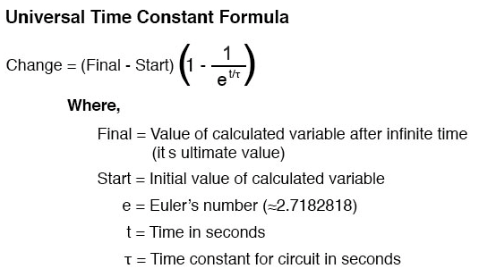
Let’s analyze the voltage rise on the series resistor-capacitor circuit shown at the beginning of the chapter.
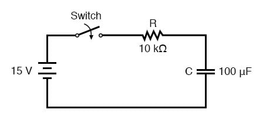
Note that we’re choosing to analyze voltage because that is the quantity capacitors tend to hold constant. Although the formula works quite well for current, the starting and final values for current are actually derived from the capacitor’s voltage, so the calculating voltage is a more direct method. The resistance is 10 kΩ, and the capacitance is 100 µF (microfarads). Since the time constant (τ) for an RC circuit is the product of resistance and capacitance, we obtain a value of 1 second:
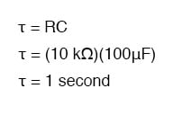
If the capacitor starts in a totally discharged state (0 volts), then we can use that value of voltage for a “starting” value. The final value, of course, will be the battery voltage (15 volts). Our universal formula for capacitor voltage in this circuit looks like this:
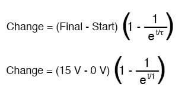
So, after 7.25 seconds of applying a voltage through the closed switch, our capacitor voltage will have increased by:
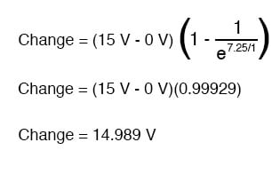
Since we started at a capacitor voltage of 0 volts, this increase of 14.989 volts means that we have 14.989 volts after 7.25 seconds.
The same formula will work for determining the current in that circuit, too. Since we know that a discharged capacitor initially acts like a short-circuit, the starting current will be the maximum amount possible: 15 volts (from the battery) divided by 10 kΩ (the only opposition to current in the circuit at the beginning):
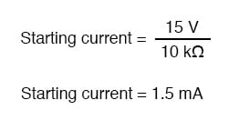
We also know that the final current will be zero, since the capacitor will eventually behave as an open-circuit, meaning that eventually, no electrons will flow in the circuit. Now that we know both the starting and final current values, we can use our universal formula to determine the current after 7.25 seconds of switch closure in the same RC circuit:
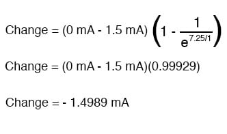
Note that the figure obtained for change is negative, not positive! This tells us that the current has decreased rather than increased with the passage of time. Since we started at a current of 1.5 mA, this decrease (-1.4989 mA) means that we have 0.001065 mA (1.065 µA) after 7.25 seconds.
We could have also determined the circuit current at time=7.25 seconds by subtracting the capacitor’s voltage (14.989 volts) from the battery’s voltage (15 volts) to obtain the voltage drop across the 10 kΩ resistor, then figuring current through the resistor (and the whole series circuit) with Ohm’s Law (I=E/R). Either way, we should obtain the same answer:
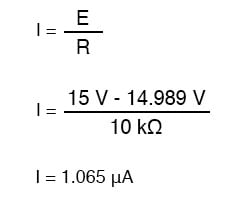
Using the Universal Time Constant Formula for Analyzing Inductive Circuits
The universal time constant formula also works well for analyzing inductive circuits. Let’s apply it to our example L/R circuit at the beginning of the chapter:
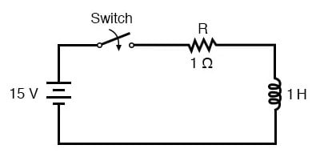
With an inductance of 1 henry and a series resistance of 1 Ω, our time constant is equal to 1 second:
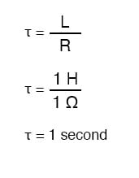
Because this is an inductive circuit, and we know that inductors oppose the change in current, we’ll set up our time constant formula for starting and final values of current. If we start with the switch in the open position, the current will be equal to zero, so zero is our starting current value.
After the switch has been left closed for a long time, the current will settle out to its final value, equal to the source voltage divided by the total circuit resistance (I=E/R), or 15 amps in the case of this circuit.
If we desired to determine the value of current at 3.5 seconds, we would apply the universal time constant formula as such:
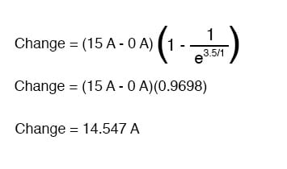
Given the fact that our starting current was zero, this leaves us at a circuit current of 14.547 amps at 3.5 seconds’ time.
Determining voltage in an inductive circuit is best accomplished by first figuring circuit current and then calculating voltage drops across resistances to find what’s left to drop across the inductor. With only one resistor in our example circuit (having a value of 1 Ω), this is rather easy:
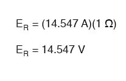
Subtracted from our battery voltage of 15 volts, this leaves 0.453 volts across the inductor at time=3.5 seconds.

REVIEW:
- Universal Time Constant Formula:
- To analyze an RC or L/R circuit, follow these steps:
- (1): Determine the time constant for the circuit (RC or L/R).
- (2): Identify the quantity to be calculated (whatever quantity whose change is directly opposed by the reactive component. For capacitors this is voltage; for inductors this is current).
- (3): Determine the starting and final values for that quantity.
- (4): Plug all these values (Final, Start, time, time constant) into the universal time constant formula and solve for change in quantity.
- (5): If the starting value was zero, then the actual value at the specified time is equal to the calculated change given by the universal formula. If not, add the change to the starting value to find out where you’re at.